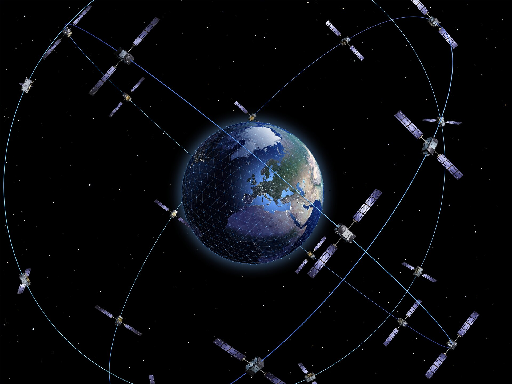

Galileo relies on a swarm of satellites for high-precision positioning.
Galileo is a global navigation satellite system (GNSS) that went live in 2016, created by the European Union through the European Space Agency (ESA), operated by the European Union Agency for the Space Programme (EUSPA), headquartered in Prague, Czech Republic, with two ground operations centres in Fucino, Italy, and Oberpfaffenhofen, Germany. The €10 billion project is named after the Italian astronomer Galileo Galilei. One of the aims of Galileo is to provide an independent high-precision positioning system so European political and military authorities do not have to rely on the US GPS, or the Russian GLONASS systems, which could be disabled or degraded by their operators at any time. The use of basic (lower-precision) Galileo services is free and open to everyone. A fully encrypted higher-precision service is available for free to government-authorized users. Galileo is intended to provide horizontal and vertical position measurements within 1 m precision. Galileo is also to provide a new global search and rescue (SAR) function as part of the MEOSAR system.
The first Galileo test satellite, the GIOVE-A, was launched 28 December 2005, while the first satellite to be part of the operational system was launched on 21 October 2011. By July 2018, 26 of the planned 30 active satellites (including spares) were in orbit. Galileo started offering Early Operational Capability (EOC) on 15 December 2016, providing initial services with a weak signal, and was expected to reach Full Operational Capability (FOC) in 2022. The full Galileo constellation will consist of 24 active satellites, which is expected by 2021. It is expected that the next generation of satellites will begin to become operational after 2025 to replace older equipment, which can then be used for backup capabilities.
As of February 2023, there are 24 launched satellites that operate in the constellation. The 2 GIOVE prototype satellites were retired in 2012, 1 satellite is not available, and 3 satellites are currently not usable. Out of 24 active satellites, 3 were from the IOV (In-Orbit Validation) types and 21 of the FOC types. The first pair of FOC satellites are orbiting the Earth in eccentric incorrect orbits whose orientation changes with respect to other Galileo orbital planes. The Galileo system has a greater accuracy than GPS, having an accuracy of less than 1 m when using broadcast ephemeris (GPS: 3 m) and a signal-in-space ranging error (SISRE) of 1.6 cm (GPS: 2.3 cm, GLONASS and BeiDou: 4–6 cm) when using real-time corrections for satellite orbits and clocks.
{kind=link}